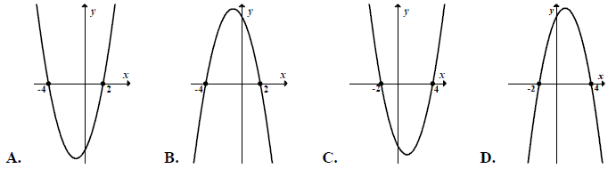

Różne zadania z funkcji kwadratowej
Funkcja kwadratowa \(y=x^2+bx+c\) jest malejąca dla \(x\in (-\infty ;2 \rangle\) a
zbiorem jej wartości jest przedział \(\langle -4;\infty )\). Postać kanoniczna tej funkcji opisana
jest wzorem
A.\( f(x)=(x-2)^2-4 \)
B.\( f(x)=(x+2)^2+4 \)
C.\( f(x)=(x+4)^2+2 \)
D.\( f(x)=(x-4)^2+2 \)
A
Dwie funkcje \(f(x)=2x-1\) oraz \(g(x)=-x^2\) określone są w zbiorze
\(\mathbb{R}.\) Wówczas wykres funkcji \(h\) określonej wzorem \(h(x)=f(x)+g(x)\) jest przedstawiony na rysunku: 
B
Liczby \(x_1, x_2\) są różnymi rozwiązaniami równania \(x^2-7=0\). Wtedy wyrażenie \(|x_1-x_2|\) jest równe
A.\( 0 \)
B.\( \sqrt{7} \)
C.\( -\sqrt{7} \)
D.\( 2\sqrt{7} \)
D
Liczba \(x=2\) jest miejscem zerowym funkcji \(f(x)= mx^2-m-9\) dla
A.\( m=1 \)
B.\( m=2 \)
C.\( m=3 \)
D.\( m=4 \)
C
Dla jakiego parametru \(m\) liczba \(x=1\) jest miejscem
zerowym funkcji \(f(x)=2x^2+mx\)?
A.\( m=-2 \)
B.\( m=2 \)
C.\( m=4 \)
D.\( m=-4 \)
A
Dane są funkcje liniowe \(f(x)=x-2\) oraz \(g(x)=x+4\) określone dla wszystkich
liczb rzeczywistych \(x\). Wskaż, który z poniższych wykresów jest wykresem funkcji \(h(x)=f(x)\cdot
g(x)\) 
A
Wykres funkcji \(f(x)=x^2-2x-8,\) gdzie \(x \in
\mathbb{R}\), przecina oś \(OX\) w punktach \(A\) i \(B\).
- Wyznacz współrzędne punktów \(A\) i \(B\).
- Oblicz pole trójkąta \(AWB\), jeśli \(W\) jest wierzchołkiem paraboli będącej wykresem funkcji \(f\).
\(A=(-2,0)\), \(B=(4,0)\), \(P_{\Delta AWB}=27\)
Wykaż, że jeżeli \(c\lt 0\), to trójmian kwadratowy \(y=x^2+bx+c\) ma dwa różne miejsca zerowe.
Liczby \(x_1\) oraz \(x_2\) są rozwiązaniami równania \(x^2 - 9 = 0\). Oblicz
wartość liczbową wyrażenia \(\frac{x_1+x_2}{2}\).
\(0\)
Liczby \(x_1\) oraz \(x_2\) są rozwiązaniami równania \((x + 1)(2 - x) = 0\).
Oblicz \({x_1}^2+x_1x_2+{x_2}^2\).
\(3\)
W dwóch hotelach wybudowano prostokątne baseny. Basen w pierwszym hotelu ma
powierzchnię \(240\) m2. Basen w drugim hotelu ma powierzchnię \(350\) m2
oraz jest o \(5\) m dłuższy i \(2\) m szerszy niż w pierwszym hotelu. Oblicz, jakie wymiary
mogą mieć baseny w obu hotelach. Podaj wszystkie możliwe odpowiedzi.
\(8\times 30\) i \(10\times 35\) lub \(12\times 20\) i \(14\times 25\)
Kolarz pokonał trasę \(114\) km. Gdyby jechał ze średnią prędkością mniejszą o
\(9{,}5\) km/h, to pokonałby tę trasę w czasie o \(2\) godziny dłuższym. Oblicz, z jaką średnią
prędkością jechał ten kolarz.
\(v=28{,}5\) km/h
Miasto \(A\) i miasto \(B\) łączy linia kolejowa długości \(210\) km. Średnia
prędkość pociągu pospiesznego na tej trasie jest o \(24\) km/h większa od średniej prędkości pociągu
osobowego. Pociąg pospieszny pokonuje tę trasę o \(1\) godzinę krócej niż pociąg osobowy. Oblicz
czas pokonania tej drogi przez pociąg pospieszny.
\(t=2{,}5\) h
Adam rozwiązywał codziennie taką sama liczbę zadań i w sumie rozwiązał \(60\)
zadań. Jeśli rozwiązywałby codziennie o \(6\) zadań więcej, to rozwiązałby te zadania o \(5\) dni
krócej. Oblicz, przez ile dni Adam rozwiązywał zadania przed maturą i ile zadań rozwiązywał każdego
dnia.
Przez \(10\) dni rozwiązywał po \(6\) zadań.
W czasie wakacji Marcin przejechał rowerem ze stałą prędkością odległość z
miasteczka \(A\) do \(B\) liczącą \(120\) km. Gdyby jechał ze średnią prędkością o \(5\) km/godz.
większą, to przejechałby tę odległość w czasie o \(2\) godziny krótszym. Wyznacz średnią rzeczywistą
prędkość Marcina i rzeczywisty czas przejazdu.
\(v=15\) km/h, \(t=8\) h
Z dwóch miast \(A\) i \(B\), odległych od siebie o \(18\) kilometrów, wyruszyli
naprzeciw siebie dwaj turyści. Pierwszy turysta wyszedł z miasta \(A\) o jedną godzinę
wcześniej niż drugi z miasta \(B\). Oblicz prędkość, z jaką szedł każdy turysta, jeżeli
wiadomo, że po spotkaniu pierwszy turysta szedł do miasta \(B\) jeszcze \(1{,}5\) godziny, drugi zaś
szedł jeszcze \(4\) godziny do miasta \(A\).
\(v_1=4\) km/h, \(v_2=3\) km/h
Pewien turysta pokonał trasę \(112\) km, przechodząc każdego dnia tę samą liczbę
kilometrów. Gdyby mógł przeznaczyć na tę wędrówkę o \(3\) dni więcej, to w ciągu każdego dnia mógłby
przechodzić o \(12\) km mniej. Oblicz, ile kilometrów dziennie przechodził ten turysta.
\(28\) km
Dwa pociągi towarowe wyjechały z miast \(A\) i \(B\) oddalonych od siebie o \(540\)
km. Pociąg jadący z miasta \(A\) do miasta \(B\) wyjechał o godzinę wcześniej niż pociąg jadący z
miasta \(B\) do miasta \(A\) i jechał z prędkością o \(9\) km/h mniejszą. Pociągi te minęły się
w połowie drogi. Oblicz z jakimi prędkościami jechały te pociągi.
\(v_1=45\) km/h, \(v_2=54\) km/h
W dwóch hotelach wybudowano prostokątne baseny. Basen w pierwszym hotelu ma
powierzchnię \(240\) m2. Basen w drugim hotelu ma powierzchnię \(350\) m2
oraz jest o \(5\) m dłuższy i o \(2\) m szerszy niż w pierwszym hotelu. Oblicz jakie wymiary ma
pierwszy basen.
\(20\) na \(12\) lub \(30\) na \(8\)
Prostokątna działka ma powierzchnię \(300\) m2. Wiadomo, że jeden bok
jest o \(5\) m dłuższy od drugiego. Ile kosztowało ogrodzenie tej działki, jeżeli za \(1\) m siatki
właściciel zapłacił \(30\) zł?
\(2100\) zł
Wyznacz wszystkie wartości parametru \(m\), dla których równanie \(x^2 + 2(1 - m)x + m^2 - m = 0\) ma dwa różne rozwiązania rzeczywiste
\(x_1\), \(x_2\) spełniające warunek \(x_1 \cdot x_2 \le 6m \le x_1^2 + x_2^2\) .
\(m\in \langle 0;\ 3-\sqrt{7} \rangle \)
Zbiorem wartości funkcji \(f(x) = -2(x + 3)(x - 4)\)
jest przedział:
A.\( \left ( -\infty , 24\frac{1}{2} \right \rangle \)
B.\( \left \langle -24\frac{1}{2},+\infty \right ) \)
C.\( \left \langle 24\frac{1}{2},+\infty \right ) \)
D.\( \left \langle -25\frac{1}{2},+\infty \right ) \)
A
\( x_1 \) jest mniejszym, zaś \( x_2 \)większym miejscem zerowym funkcji \(
f(x)=2x^2+10x+12 \). Wyrażenie \( x_2-x_1 \) ma wartość:
A.\(-1 \)
B.\(1 \)
C.\(-2 \)
D.\(2 \)
B
Wykresem funkcji kwadratowej \(f\) jest parabola o wierzchołku \(W = (5,7)\).
Wówczas prawdziwa jest równość
A.\( f(1)=f(9) \)
B.\( f(1)=f(11) \)
C.\( f(1)=f(13) \)
D.\( f(1)=f(15) \)
A
Najmniejsza wartość funkcji \(f(x)=x^2-3x+1\) w przedziale \(\langle -1,3\rangle \)
jest równa
A.\( 5 \)
B.\( \frac{3}{2} \)
C.\( 1 \)
D.\( -\frac{5}{4} \)
D
Funkcja kwadratowa określona jest wzorem \(f(x)=x^2+x+c\). Jeśli \(f(3)=4\), to
A.\( f(1)=18 \)
B.\( f(1)=6 \)
C.\( f(1)=0 \)
D.\( f(1)=-6 \)
D
Oblicz najmniejszą i największą wartość funkcji kwadratowej \(f(x)=x^2-6x+3\) w
przedziale \(\langle 0,4\rangle \).
\(f_{max}=3\) oraz \(f_{min}=-6\)
Funkcja kwadratowa \(f\) określona jest wzorem \(f(x) = ax^2 + bx + c\). Zbiorem
rozwiązań nierówności \(f(x) \gt 0\) jest przedział \((0,12)\). Największa wartość funkcji
\(f\) jest równa \(9\). Oblicz współczynniki \(a\), \(b\) i \(c\) funkcji \(f\).
\(a=-\frac{1}{4}\), \(b=3\), \(c=0\)